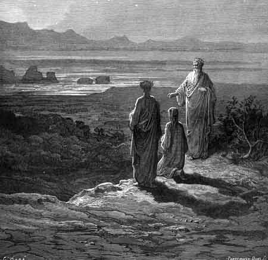

Canto ISaída do inferno - Quatro estrelas
|
|  |
| Dante e Virgílio diante de Catão de Útica. Ilustração de Gustave Doré (século XIX). Observação: Doré errou ao representar uma sombra atrás de Virgílio. No relato de Dante, Virgílio e as outras almas jamais projetam sombra . |
Com sinais e gestos, meu mestre pediu que eu ficasse de joelhos e baixasse a cabeça em sinal de respeito. Depois, dirigindo-se ao velho, falou:
- Eu não estou aqui por vontade própria. Uma dama que desceu do céu me pediu que eu acompanhasse este aqui. Ele ainda não viu a morte, mas por sua imprudência ela esteve tão perto que pouco tempo havia para salvá-lo. Como eu disse, fui enviado para ajudá-lo e não havia outro caminho a não ser este, que eu escolhi. A ele mostrei todos os condenados do Inferno e pretendo ainda mostrar as almas que se purgam no teu domínio. Que te agrade aceitar a sua vinda: ele busca a liberdade, tão cara, como deve saber alguém que deu a vida por ela, como tu fizeste em Útica. Não quebramos as leis divinas. Este homem ainda vive e Minós não me impede. Eu vim daquele círculo onde está a tua Márcia. Por seu amor, então, deixa que possamos conhecer teus sete reinos.
- Márcia era um prazer aos meus olhos, enquanto eu era vivo - respondeu o velho-. Ela agora vive além do rio Aqueronte e não mais me move, pela lei que vigora desde o dia em que eu fui trazido para cá. Mas se uma dama celeste te ordena, não é preciso adulação, basta pedir em seu nome. Vai, então, com esse homem e coloca em volta da sua cintura um junco liso. Não esqueças de lavar o seu rosto para que fique livre das névoas infernais. Em volta desta ilha, lá onde as ondas quebram na praia, encontrarás juncos nascendo na areia onde nenhuma outra planta poderia sobreviver. Para continuar, deves guiar-te pelo Sol, que em breve estará nascendo. Ele indicará o caminho onde encontrarás a subida mais suave.
O velho calou-se. Pouco depois, desapareceu. Eu me levantei e olhei para Virgílio, que falou:
- Vem! Me acompanha!
Eu obedeci. Seguimos para a praia por um caminho deserto e plano, com a imensidão do mar preenchendo nosso horizonte. Paramos assim que chegamos a um lugar onde o orvalho se formava nas folhas das plantas. O mestre abaixou-se e molhou suas mãos na grama úmida. Logo compreendi o que ele pretendia fazer e ofereci-lhe meu rosto manchado de lágrimas, que ele limpou, restaurando sua cor verdadeira que o Inferno havia ocultado.
Continuamos a caminhar até a praia. Como o velho havia dito, juncos cresciam nas areias onde planta alguma seria capaz de sobreviver. Virgílio procurou um junco liso para amarrar na minha cintura. Assim que ele arrancou a planta do chão, ocorreu um milagre: um novo junco, igual ao que ele arrancara, imediatamente nasceu no mesmo lugar.